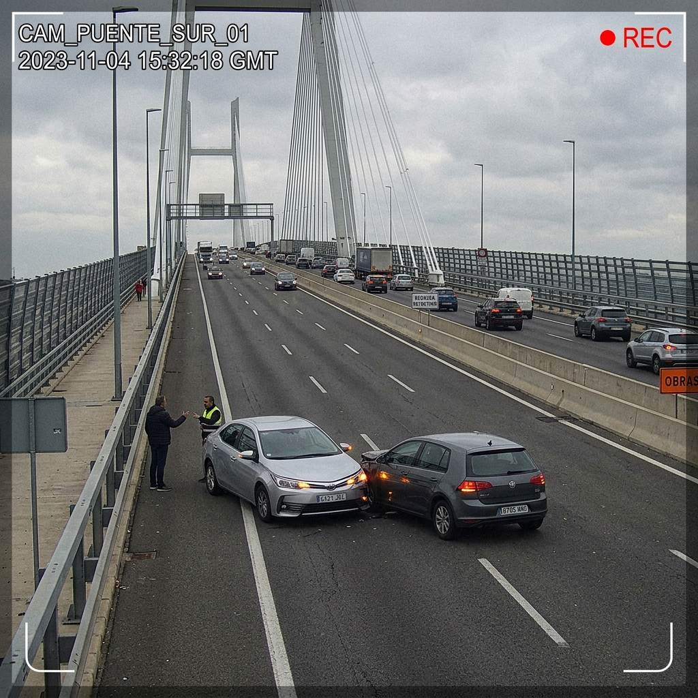

COV-PGB
MONITOREO VIAL - PUENTE GENERAL BELGRANO
Consola de Operaciones - Integración de Telemetría de IA y Procesamiento de Lenguaje DSL
ESTADO:
OPERACIONAL
SISTEMA:
VÍA PÚBLICA INTEGRADA
CÁMARAS EN VIVO - PUENTE GENERAL BELGRANO
EN VIVO
CANAL 01: PUENTE SUR
CANAL 02: ACCESO CORR.
CANAL 03: PUENTE NORTE

CAM_PUENTE_SUR_01
REC
ACCIDENTE: 96%
TELEMETRÍA DE INCIDENTES - LOG DE EVENTOS
ESPECIFICACIÓN FORMAL (CÓDIGO DSL)
// Inicializando intérprete...
Compilar y Despachar
Restablecer Código
ÁRBOL DE SINTAXIS ABSTRACTA (AST)
DESPACHO DE UNIDADES DE EMERGENCIA (ACTUADORES)
Policía / Gend.
Ambulancia
Bomberos
SEÑALIZACIÓN LED - MENSAJERÍA VARIABLE VIAL
SISTEMA OPERATIVO - SIN ALERTAS